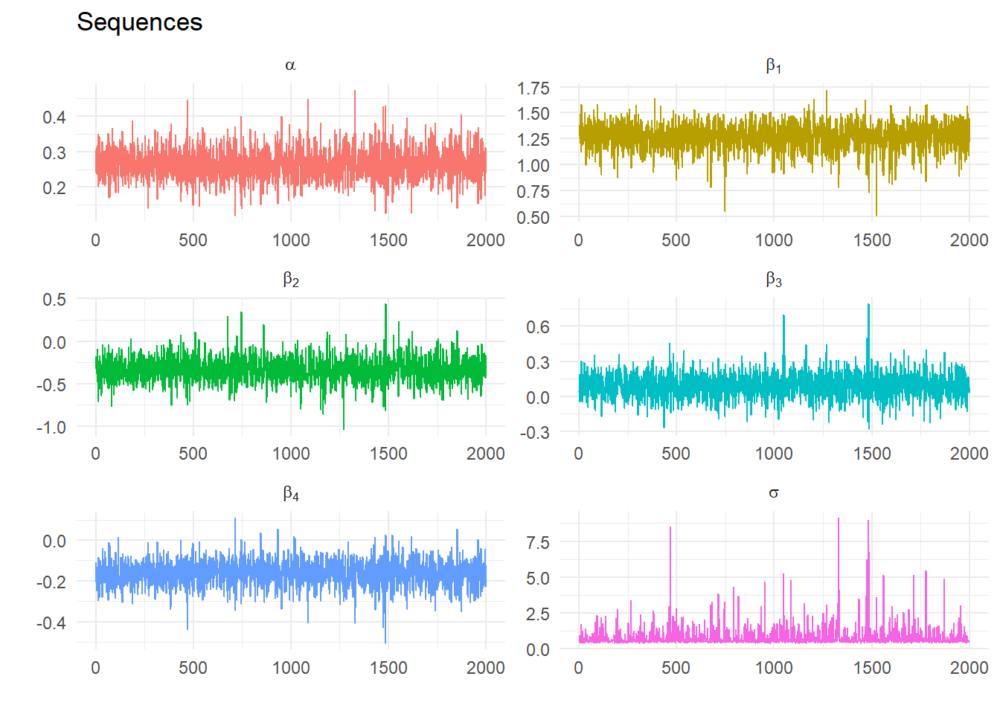
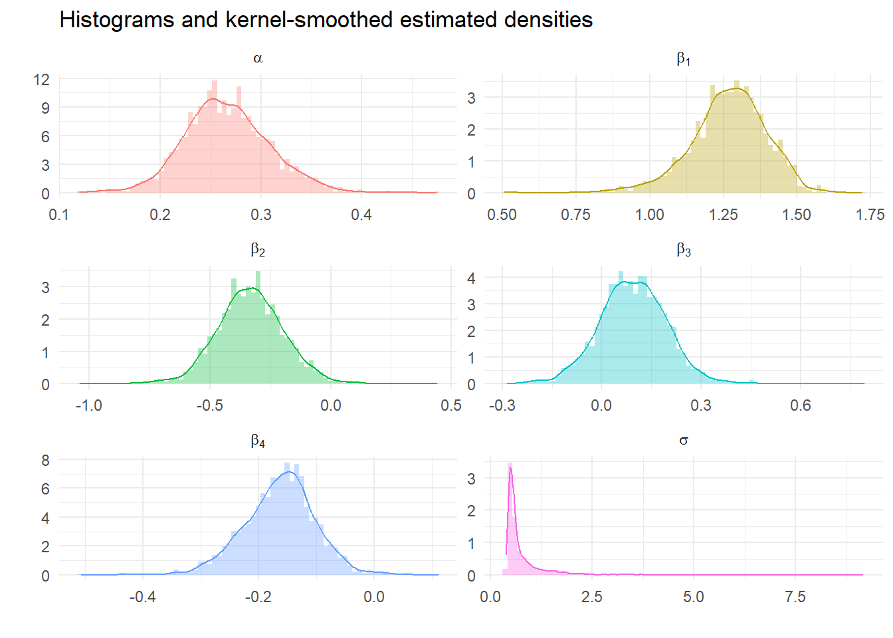
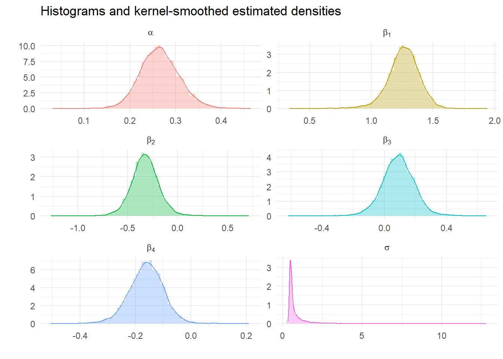
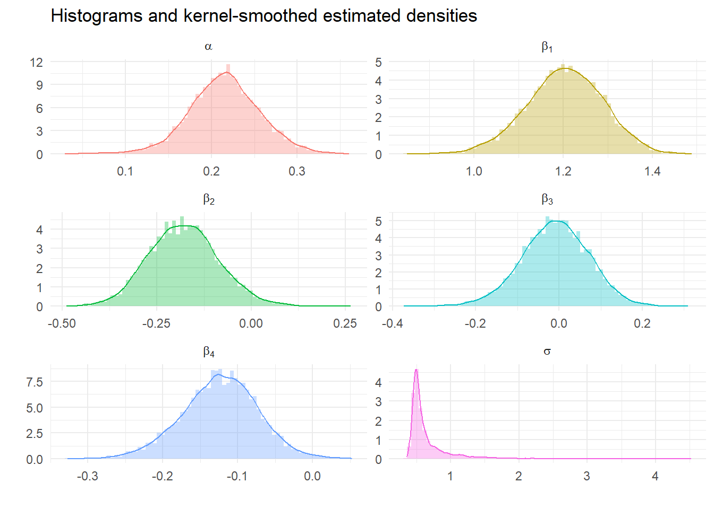

| σ₁ | σ₂ | σ₃ | Marginal β | |
|---|---|---|---|---|
| β₁ | 0.10 | 0.20 | 0.30 | 0.6 |
| β₂ | 0.10 | 0.05 | 0.05 | 0.2 |
| β₃ | 0.05 | 0.10 | 0.05 | 0.2 |
| Marginal σ | 0.25 | 0.35 | 0.40 | 1.0 |
Table 1 Joint probabilities
Think about a the joint density of some parameters of interest for a discrete distribution:
| σ₁ | σ₂ | σ₃ | Marginal β | |
|---|---|---|---|---|
| β₁ | 0.10 | 0.20 | 0.30 | 0.6 |
| β₂ | 0.10 | 0.05 | 0.05 | 0.2 |
| β₃ | 0.05 | 0.10 | 0.05 | 0.2 |
| Marginal σ | 0.25 | 0.35 | 0.40 | 1.0 |
Table 1 Joint probabilities
For this discrete example, the sums across the columns and rows are the marginal densities for the parameters: they don’t depend on the other parameter. Gibbs sampling estimates these sums by constructing sequences from the conditional densities that have the right joint density.
Suppose there are \(k\) variables \(\phi_i\) jointly distributed \[ J(\phi_1,\phi_2,...,\phi_k) \] For inferential purposes we are interested in the marginal distributions denoted \[ G(\phi_i),\quad i=1,...,k \] Gibbs sampling is a technique that generates a sequence of values that have the same distribution as the underlying marginals. It doesn’t use the joint density but instead a sequence of conditionals densities \[ H(\phi_i|\Phi_{j\ne i}),\quad i=1,...,k \] where \(\Phi_{j\ne i}\) are all other parameters. We will look at the procedure first and then at how it works in an example.
Step 0 Set starting values for \(\phi_1,...,\phi_k\) \[ \phi_1^0,\ \phi_2^0,\ ...,\ \phi_k^0 \]
Step 1 Sample \(\phi_1^1\) from \[ H(\phi_1^1\ |\ \phi_2^0,\ \phi_3^0,\ ...,\ \phi_k^0) \]
Step 2 Sample \(\phi_2^1\) from \[ \begin{gather*} H(\phi_2^1\ |\ \phi_1^1,\ \phi_3^0,\ ...,\ \phi_k^0) \\ \vdots \end{gather*} \]
Step \(k\) Sample \(\phi_k^1\) from \[ H(\phi_k^1\ |\ \phi_1^1,\ \phi_2^1,\ ...,\ \phi_{k-1}^1) \] to complete one iteration.
Repeat for \(n\) iterations and save the last \(n-p\) values of \(\phi_i^j\) for every \(i=1,...,k\). As \(n \rightarrow \infty\) the joint and marginal distributions of the simulated \(\phi_1^j,\ ...,\ \phi_k^j\) converge at an exponential rate to the joint and marginal distributions of \(\phi_1,\ ...,\ \phi_k\). Then the joint and marginal distributions can be approximated by the empirical distribution.
For example, the estimated mean of the marginal distribution of \(\phi_i\) is \[ \bar \phi_i = \frac{\sum_{j=p+1}^n \phi_i^j}{n-p} \] where we discard the first \(p\) draws.
For the specific linear model \[ y_t = \alpha + \beta_1 X_{1t} + \beta_2 X_{2t}+v_t\text{, }v_t\sim N(0,\sigma^2) \]
Step 1 Set priors for \(\sigma^2\) and \(\beta=\{\alpha, \beta_1, \beta_2\}\) \[ P(\beta) \sim N\left( \underset{\beta_{0}}{\left[ \begin{array}{c} \alpha^0 \\ \beta_1^0 \\ \beta_2^0 \end{array} \right],}\underset{\Sigma_0} {\left[ \begin{array}{ccc} \Sigma_{\alpha} & 0 & 0 \\ 0 & \Sigma_{\beta_1} & 0 \\ 0 & 0 & \Sigma_{\beta_2} \end{array} \right] }\right) \] \[ P(\sigma^2) \sim \Gamma^{-1}\left( \frac{T_{0}}{2},\frac{\theta_0}{2}\right) \] and set starting values for e.g. \(\alpha=\beta_1=\beta_2=0\), \(\sigma^2=1\)
Step 2 Given \(\sigma^2\) sample \(\beta\) from its conditional posterior distribution \[ H(\beta|\sigma^2) \sim N(M^*, V^*) \] where \[ \begin{align} M^* &= \left(\Sigma_0^{-1} + \frac{1}{\sigma^2} X'X\right)^{-1} \left(\Sigma_0^{-1} \beta_0+\frac{1}{\sigma^2}X'y\right)\\ V^* &= \left(\Sigma_0^{-1}+\frac{1}{\sigma^2} X'X\right)^{-1} \end{align} \] and \(X_t = \{\alpha, X_{1t}, X_{2t}\}\)
Step 3 Given a draw of \(\beta\) (and call it \(\beta^1\)) draw \(\sigma^2\) from its conditional distribution: \[ H(\sigma^2 | \beta) \sim \Gamma^{-1}\left( \frac{T_0+T}{2}, \frac{\theta_0 + (y-X\beta^1)'(y-X\beta^1)}{2}\right) \]
Step 4 Repeat Steps 2 and 3 \(n\) times and compute the posterior means using the last \(m\) draws (e.g. repeat 5000 times and save the last 1000 draws)
| Coefficient | Estimate | SE | t-stat |
|---|---|---|---|
| INF_1 | 1.309 | 0.064 | 20.599 |
| INF_2 | -0.335 | 0.105 | -3.179 |
| INF_3 | 0.100 | 0.105 | 0.946 |
| INF_4 | -0.137 | 0.064 | -2.140 |
| constant | 0.247 | 0.075 | 3.268 |
| sigma | 0.683 | NA | NA |
Linear regression table (n.b. no priors)

| Parameter | Expected | SE | lower_5 | upper_95 |
|---|---|---|---|---|
| alpha | 0.266 | 0.043 | 0.202 | 0.339 |
| beta[1] | 1.267 | 0.130 | 1.047 | 1.462 |
| beta[2] | -0.332 | 0.142 | -0.551 | -0.100 |
| beta[3] | 0.093 | 0.104 | -0.075 | 0.253 |
| beta[4] | -0.163 | 0.062 | -0.269 | -0.067 |
| sigma | 0.783 | 0.669 | 0.434 | 1.798 |
Calculate descriptive statistics from Gibbs Samples

We can look at the impact of tighter priors and more samples. What should we expect?

